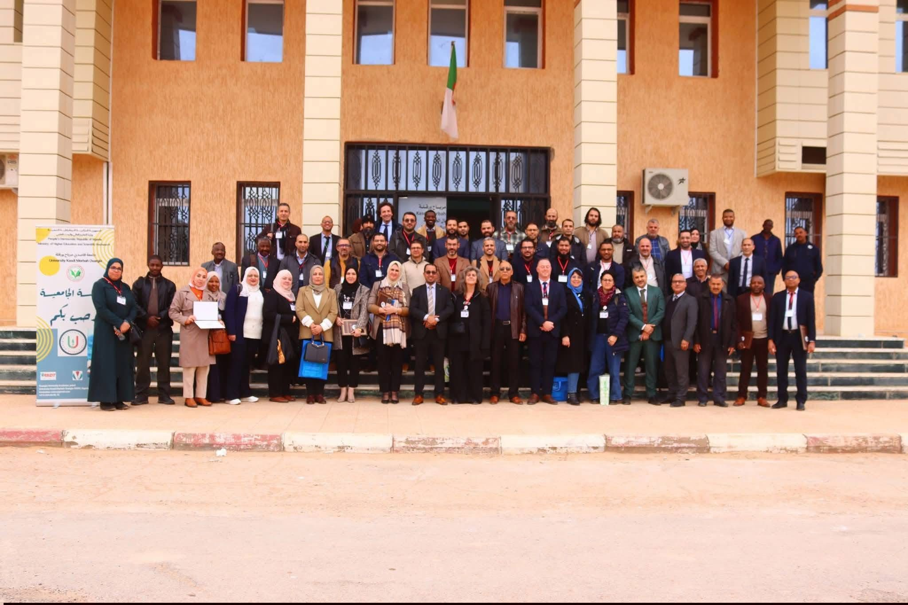
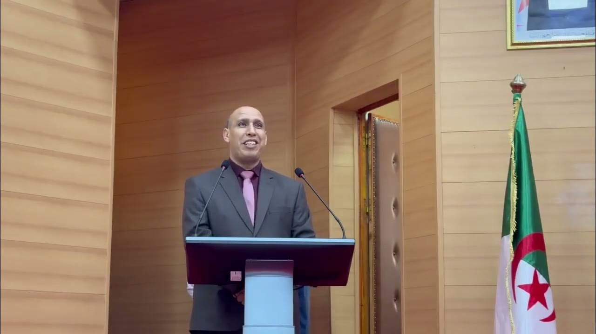
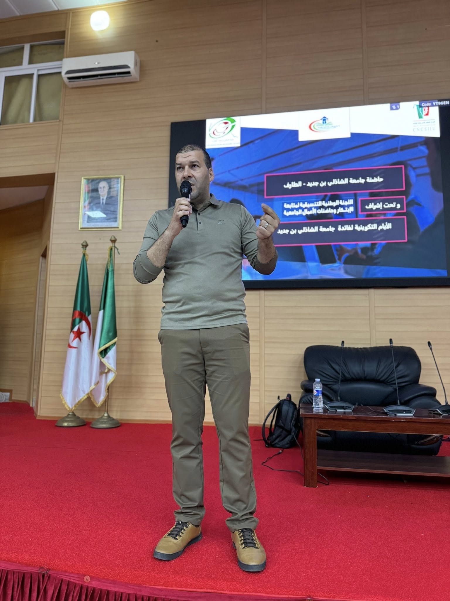
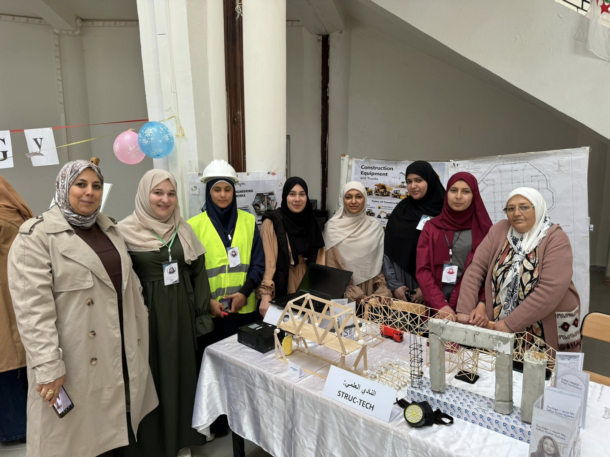
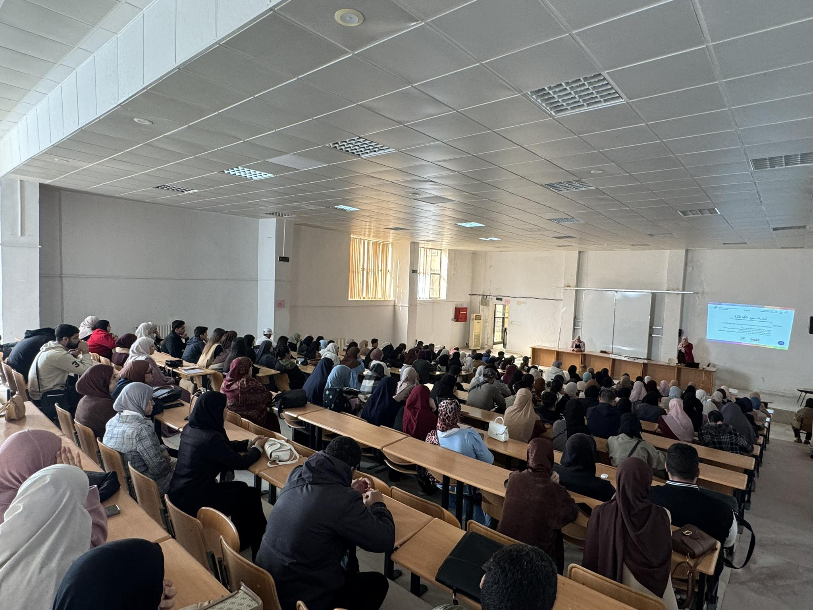
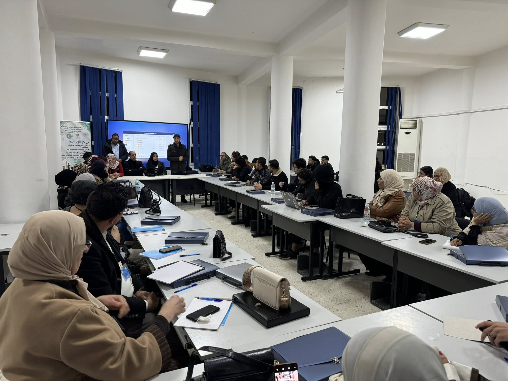

Une université tournée vers l’excellence, la recherche et l’innovation
L’Université Chadli Bendjedid - El Tarf accompagne les étudiants dans leur parcours académique à travers des formations modernes, des activités scientifiques et un environnement dynamique.

Encadrement universitaire

Directeur de l’université
Supervise la stratégie de développement, la qualité académique et les projets scientifiques de l’université.

Chef du département informatique
Accompagne les étudiants dans les formations informatiques, la recherche, les projets numériques et l’innovation technologique.
Former une génération compétente, créative et responsable
L’université développe un environnement académique où les étudiants peuvent apprendre, innover, participer à des projets, et construire leur avenir professionnel.
Formation
Programmes modernes adaptés aux besoins académiques.
Recherche
Encouragement des projets scientifiques et technologiques.
Ouverture
Coopération, échanges et partenariats universitaires.
Innovation
Créativité, entrepreneuriat et transformation digitale.
Activités, études et projets étudiants

Projets pratiques et innovation
Les étudiants participent à des projets appliqués, expositions et travaux pratiques.

Études et conférences
Des conférences et séances pédagogiques enrichissent la formation.

Ateliers professionnels
Des rencontres et ateliers accompagnent les étudiants dans leurs projets.